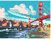
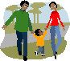

| World Open Space on Open Space 2008 |
|
 |
The Invitation |
 |
To Register |
| The Site | |
| Getting There | |
| Who's Coming? | |
 |
Our Sponsors |
 |
Schedule and Times for Events |
 |
Accommodation— recommendations and links (delegates are responsible for their own accommodation) |
| Airports and Ground Transportation | |
| Opportunities to help share resources with others so they, too, can join us at the WOSonOS | |
 |
Information and suggestions about financial aid, home stays, and other resources |
 |
Visa information |
 |
Global Village Marketplace and Silent Auction |
 |
Maps and driving directions for the Golden Gate Club at the Presidio, Fort Mason, and San Francisco |
 |
Other Places and Things to Do in and around San Francisco (including whale watching, a WOSonOS tradition in regions shared with whales) |
| Currency Conversion | |
 |
Weather (summer in San Francisco shifts from warm to foggy and cold) |
| About Open Space Technology | |
| If you have any questions we welcome you to contact us: WOSonOS 2008 Host Team lisaheft@openingspace.net |
|
San Francisco
About San Francisco
Whether you are walking, riding in a taxi or car or taking public transportation, San Francisco is an easy to navigate city, with nothing being very far from anything else. Visit Chinatown for a dim sum lunch, Japantown's Kabuki Hot Springs spa, shop at Union Square's major department and specialty stores, walk along the historic Waterfront, have a cappuccino and watch the world go by in the North Beach Italian district, visit South of Market to see a changing community, from artists and manufacturing facilities to upscale lofts and web-based companies, the Mission District with its distinctly Central and South American feel and its wonderful murals, and the gay-friendly Castro District—or take a stroll through Golden Gate Park. Across the Bay Bridge to the east and also available by public transportation is the University of California Berkeley campus, home of the free speech movement. Across the Golden Gate Bridge to the north is the beautiful Marin Headlands nature area. With a short car ride you can enjoy the Napa and Sonoma County winemaking region or visit the elephant seals at Año Nuevo beach. See below for Other Places and Things to Do in and around San Francisco.
And if you have a favorite activity, walk, restaurant, relaxing spot or day trip, we invite you to create and pack along in your suitcase a letter-sized "poster" in color for each place or activity you wish to describe. Please include any information a visitor may need, and make one poster for each different idea. Feel free to draw, make a collage or create this on your computer—creativity is welcome. We will post these on a wall at our conference to give everyone some good ideas during their stay in San Francisco.
Whale watching
A WOSonOS tradition in regions shared with whales:
http://www.oceanic-society.org/index5.html

Other Places and Things to Do in and around San Francisco
- Enjoy an Italian pastry and attend the North Beach Jazz Festival.
- Visit Crissy Field, originally a military airfield and now a restored tidal marsh.
- Look for lost hippies and love beads in the Haight Ashbury.
- Enjoy the Balmy Alley murals in the Mission District.
- Walk hand-in-hand with your partner (of any gender) in the gay Castro District.
- Sample local organic produce at the Farmers' Market at the waterfront's Ferry Building.
- Take your kids to Zeum the kids' museum or visit the Museum of Modern Art.
- Ride the cable cars up and down the city's hilly streets.
- Eat around the world via cuisine from Vietnam, Italy, Thailand, Central America, Spain, Morocco and many other cuisines and ethnic cultures.
- See diverse explorations of identity, struggle, humor and culture at the San Francisco Jewish Film Festival.
- Drive out to Wine Country to taste local wines and foods and attend the Napa Sonoma Wine Country Film Festival.
Other Websites with Things to Do in San Francisco
- San Francisco Convention and Visitors Bureau.
- SFGate, for ideas about events and sightseeing during your stay.
- "Guns on San Francisco Bay, and the Hiking Trails Left Behind", an article from the New York Times.